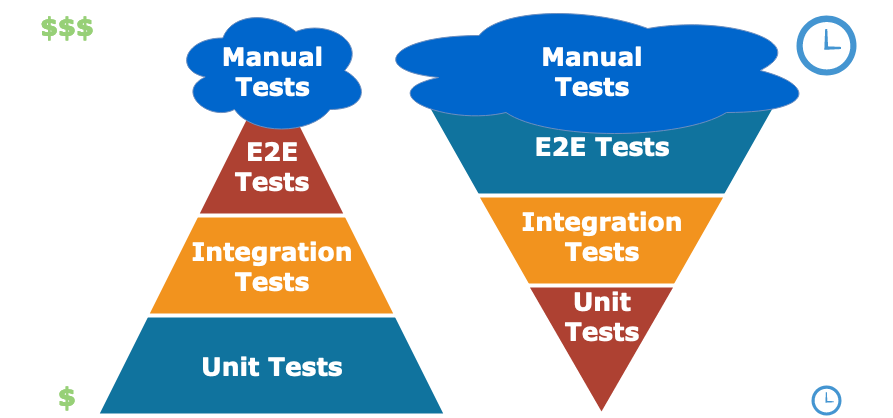

Honza Pačes
8+ year experience
Mostly Java Web Apps
Spend 2 year at Amazon

//given
CalendarEvent calendarEvent = new CalendarEvent();
when(eventRepository.save(any())).thenReturn(calendarEvent);
//when
CalendarEvent actualEvent = eventController.createEvent(calendarEvent);
//then
assertThat(actualEvent).isEqualTo(calendarEvent);
verify(eventRepository).save(calendarEvent);
//arrange
CalendarEvent calendarEvent = new CalendarEvent();
when(eventRepository.save(any())).thenReturn(calendarEvent);
//act
CalendarEvent actualEvent = eventController.createEvent(calendarEvent);
//assert
assertThat(actualEvent).isEqualTo(calendarEvent);
verify(eventRepository).save(calendarEvent);
http://hamcrest.org/JavaHamcrest
assertThat("chocolate chips", theBiscuit.getChocolateChipCount(), equalTo(10));
assertThat("hazelnuts", theBiscuit.getHazelnutCount(), equalTo(3));
https://assertj.github.io/doc/
assertThat(fellowshipOfTheRing).hasSize(9)
.contains(frodo, sam)
.doesNotContain(sauron);
Tools designed with testing in mind
@SpringBootTest
@AutoConfigureMockMvc
ActorTestKit testKit = ActorTestKit.create();
Kotlin
TODO("This is a function that throws "An operation is not implemented" excpetion ")
Scala
???
Java
//not language feature
thrown new NotImplementedException();
Junit5
VS
TestNG
@DisplayName("Really nice test name")
@ParameterizedTest
@ValueSource(ints = { 1, 2, 3 })
void testWithValueSource(int argument) {
@TestMethodOrder(MethodOrderer.Random.class)
https://site.mockito.org/
Stubbing
when(eventRepository.save(any())).thenReturn(calendarEvent);
Verification
verify(eventRepository).save(calendarEvent);
wiremock.org
wireMockRule.stubFor(get(urlEqualTo("/stock/SWI/chart/date/20190816?chartByDay=true&token=stockToken"))
.willReturn(aResponse()
.withBody(FileLoader.read("classpath:stockPriceResponse.json"))
.withHeader(CONTENT_TYPE, MediaType.APPLICATION_JSON_VALUE)
.withStatus(200)));
https://cucumber.io/
Feature: Get weather for a day
Days in the past, current day and upcoming 7 days should provide weather info
Scenario: Get weather for today
Given a specific day
When I call day overview for that day
Then I get weather for that day
http://rest-assured.io/
given().
body(new CalendarEvent(LocalDate.now(), "header", "text")).
contentType("application/json").
when().
post(String.format("http://localhost:%s/event", port)).
then().
statusCode(200).
body("eventHeader", equalTo("header"), "eventText", equalTo("text"));
https://github.com/honzapaces/21stcenturyjavatesting